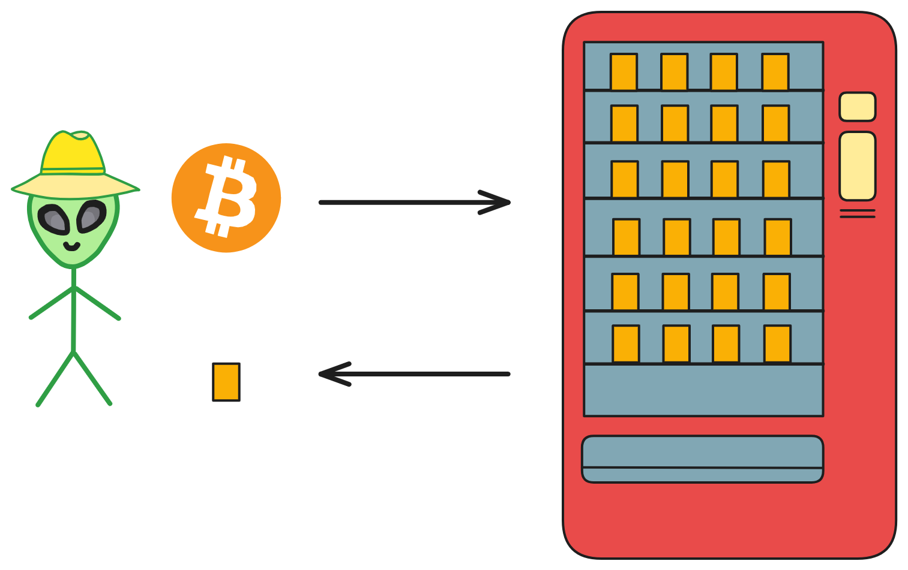
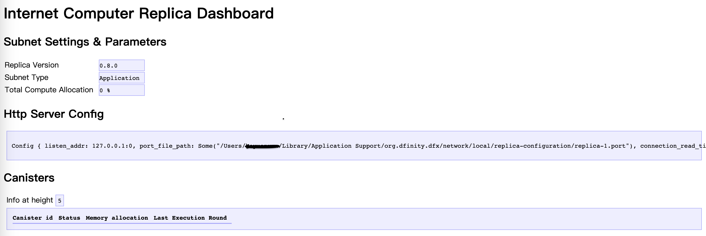

DApp开发快速入门
互联网计算机（Internet Computer ，简称 IC ）是由 DFINITY 基金会推出的一个公共区块链平台，旨在扩展区块链的功能，使其能够托管网站与后端软件。
IC 通过创新的协议和先进的技术，提供了无与伦比的速度、存储效率和直接在链上部署网站的能力。
它的核心特点是：
- 去中心化：IC 是去中心化的云服务系统，可靠、没有单点故障。
- 可扩展性：IC 的结构允许它在保持高性能的同时，有无限扩容的能力。
- 互操作性：IC 上的不同应用可以无缝交互，提供了更流畅的用户体验。
- 成本效率：IC 提供了低成本的计算资源，比其他区块链和传统云服务便宜。
DApp
DApp（Decentralized Application）去中心化应用。DApp 是一种运行在区块链网络上的应用程序。DApp 与传统的中心化应用不同，它不受任何个体的控制，而且内部数据是不可篡改的。
DApp 的去中心化特性得益于区块链技术的应用。区块链是一个由多个节点组成的分布式数据库，每个节点都保存有完整的数据副本，区块链通过共识算法确保数据的一致性。
智能合约就像一台自动售货机，而且是不需要信任任何第三方：部署自动售货机的人、机器提供商、城管等等。不受任何人（单一实体）管制的自动售货机！
在 IC 上开发一个 DApp 非常容易：只要有一个前端 Canister 和几个后端 Canister 即可。
- 智能合约开发（后端）： 运行在区块链上的自动执行合约，定义了 DApp 的核心业务逻辑。
- 用户界面（前端）： 用户与 DApp 进行交互的界面，可以是网页、移动应用或其他形式。
合约是由 Motoko 语言或 Rust 语言编写，编译为 Wasm 字节码后部署在 Canister 中运行。
在IC上开发DApp
准备工作
在开始之前，我们需要具备一些基础的知识和工具：
- 安装必要的软件：包括 DFINITY Canister SDK（dfx），这是 IC 的命令行工具。如果你还没有安装，先看这里安装。
- 选择编程语言：主要使用 Motoko（专门为 IC 设计的语言）和 Rust ，还支持多种编程语言：Python 、TS 、C++ 。
考虑的最佳实践
- 代码安全：始终确保智能合约代码是安全的。
- 用户体验：设计直观且响应迅速的用户界面。
- 合约升级：计划好如何更新和升级智能合约。
- 资源优化：优化合约以减少资源消耗和成本。
实战剖析
我们用一个 Web3 版的 LinkedIn（领英）demo 入手，剖析代码并尝试增加新功能。
LinkedUp 的源代码位于 DFINITY 官方仓库，现在我们先试着理解代码（这里我们暂时忽略前端部分）。
我们要构建的是一个社交网络，那么主要的需求就是：
- 用户能够创建自己的主页。
- 用户能修改自己的个人主页。
- 用户能查看别人的主页信息。
- 用户之间可以互相关注建立联系。
我们先看项目根目录下的 dfx.json 文件。
dfx.json 文件是整个项目的基础配置文件，从这个文件里我们可以看到项目里有哪些 Canister 、这些 Canister 在哪个目录里、dfx 版本等信息。
项目包含三个 Canister ： Connectd 、Linkedup 和 Linkedup_assets 。
Linkedup_assets 是用来放前端代码的 Canister ，我们暂时忽略它；先看其余两个后端的 Canister 。
{
"canisters": {
"connectd": {
"main": "src/connectd/main.mo"
},
"linkedup": {
"main": "src/linkedup/main.mo"
},
"linkedup_assets": {
"dependencies": ["linkedup"],
"frontend": {
"entrypoint": "src/linkedup/public/main.js"
},
"type": "assets",
"source": [
"src/linkedup/public",
"dist/linkedup_assets"
]
}
},
"defaults": {
"build": {
"packtool": ""
}
},
"networks": {
"tungsten": {
"providers": ["https://gw.dfinity.network"],
"type": "persistent"
},
"local": {
"bind": "0.0.0.0:8000",
"type": "ephemeral"
}
},
"dfx": "0.6.22"
}
项目后端结构：
-
Linkedup Canister 主要负责业务逻辑，例如创建个人主页、修改个人主页资料等。它也提供了调用 Connectd Canister 的 API 接口，这样的话前端只需要和 Linkedup 交互即可。
-
Connectd Canister 主要负责建立用户间的关系，提供给 Linkedup Canister 调用。
Connectd Canister
我们先仔细剖析下 Connectd Canister 的代码：
├── connectd
│ ├── digraph.mo
│ ├── main.mo
│ └── types.mo
Connectd Canister 下面有三个 motoko 文件：
main.mo 是 Connectd Canister 的主要代码文件，在这个文件中定义了 actor 。
types.mo 是 Connectd Canister 的自定义类型模块文件，被引入 main.mo 中使用。
digraph.mo 是 Connectd Canister 的模块文件，它定义了一个公共类，main.mo 可以实例化这个类，使用其 API ，主要用来处理关系的数据。
了解了框架后我们来深入代码一行行的剖析。
types.mo 定义了一些自定义类型：
// 引入Principal库，用于定义身份，mo:base是motoko的基本库
import Principal "mo:base/Principal";
// 定义一个模块
module {
// 定义一个公共的"顶点"类型，其本质是Principal类型
public type Vertex = Principal;
};
digraph.mo 是一个模块文件，它主要实现了一个简单的有向图数据结构，提供了添加顶点、添加边和查询邻接顶点的基本功能。这样的实现能够轻松地构建和操作有向图。
这段代码定义了一个 “ 用户关系图 ”（Digraph）的类，用于表示用户之间的关系。这个关系图是有向图，其中用户被视为图的顶点，用户之间的关系则被视为图的有向边。
import Array "mo:base/Array"; // 引入Array库
import Iter "mo:base/Iter"; // 引入Iter库
import Types "./types"; // 引入自定义类型模块
// 定义模块
module {
// 定义一个类型Vertex
// 它来自于引入的types模块中的Vertex类型
// 这个Vertex类型用于表示图中的顶点
type Vertex = Types.Vertex;
// 定义“用户关系图”公共类，这个类表示有向图
// 在这里我们将“用户”比作一个图的一个”点“，将用户间的”关系“比作图的一条”边“
public class Digraph() {
// 类中包含两个属性，vertexList用于存储顶点，edgeList用于存储有向边
var vertexList: [Vertex] = []; // 定义顶点(用户点)数组
var edgeList: [(Vertex, Vertex)] = []; // 定义边(用户关系)数组，数组元素的类型是一个元组(from, to)
// 定义一个公共函数，这个函数可以在图中添加一个顶点
// 通过调用Array.append将新顶点添加到vertexList中
public func addVertex(vertex: Vertex) { // 函数参数名称为vertex，类型为Vertex；没有返回值
// 在motoko中，var为可变值，可变值的再赋值需要用 ":="
vertexList := Array.append<Vertex>(vertexList, [vertex]);
};
// 定义新增一条边的公共函数
public func addEdge(fromVertex: Vertex, toVertex: Vertex) {
// 通过调用Array.append将新边添加到edgeList中
edgeList := Array.append<(Vertex, Vertex)>(edgeList, [(fromVertex, toVertex)]);
};
// 这个函数用于查询某个顶点的邻接顶点
// 通过遍历edgeList，找到与输入顶点相关的边，并将对应的邻接顶点添加到adjacencyList中
// 也就是查询用户的关系：谁关注了我，我关注了谁
public func getAdjacent(vertex: Vertex): [Vertex] {
var adjacencyList: [Vertex] = [];
for ((fromVertex, toVertex) in Iter.fromArray<(Vertex, Vertex)>(edgeList)) {
if (fromVertex == vertex) {
adjacencyList := Array.append<Vertex>(adjacencyList, [toVertex]);
};
};
adjacencyList
};
};
};
main.mo 用于管理用户之间的连接关系。
主要定义了可供外部调用的 API 接口，图的相关操作是实例化图公共类后调用相关函数。
这有助于组织和查询用户之间的关联关系，适用于社交网络、关系图等场景。
import Digraph "./digraph"; // 引入用户图模块
import Types "./types"; // 引入自定义类型模块
// 定义名称为Connectd的actor
actor Connectd {
// 定义“点”类型
type Vertex = Types.Vertex;
// 实例化用户图模块的图公共类
var graph: Digraph.Digraph = Digraph.Digraph();
// 检查 Canister 是否正常运行
public func healthcheck(): async Bool { true };
// 用户A建立与用户B的关系，供外部调用的函数是async异步的
public func connect(userA: Vertex, userB: Vertex): async () {
graph.addEdge(userA, userB);
};
// 获取一个用户的关系（用户点的邻边）
public func getConnections(user: Vertex): async [Vertex] {
graph.getAdjacent(user)
};
};
Linkedup Canister
了解完 Connectd Canister 后我们再来看 Linkedup Canister ，我们需要记住，Connectd Canister 是为 Linkedup Canister “ 服务 ” 的。
同样的，我们看一下 Linkedup Canister 代码的目录结构：
linkedup
├── database.mo
├── main.mo
├── types.mo
└── utils.mo
Linkedup Canister 同样有 main.mo 和 type.mo ，main.mo 是负责主要业务逻辑的，types.mo 负责新类型的定义。
而新增的 utils.mo 模块主要有常用的实用函数。
database.mo 则与上文的 digraph.mo 类似，其定义了一个简易的数据库模块，主要用于处理业务逻辑所涉及的数据结构和相应处理函数
我们接着深入代码。
types.mo 定义了 UserId、NewProfile、Profile 三个类型：
import Principal "mo:base/Principal";
module {
public type UserId = Principal;
public type NewProfile = {
firstName: Text; // Text为文本类型
lastName: Text;
title: Text;
company: Text;
experience: Text;
education: Text;
imgUrl: Text;
};
public type Profile = {
id: UserId;
firstName: Text;
lastName: Text;
title: Text;
company: Text;
experience: Text;
education: Text;
imgUrl: Text;
};
};
database.mo 模块实现了一个简单的用户目录系统。它定义了名为目录的公共类，公共类中定义了一个 Key 为 UserId 、value 为 Profile 的 hashmap ，用于存储和查询用户的个人资料：
import Array "mo:base/Array";
import HashMap "mo:base/HashMap";
import Iter "mo:base/Iter";
import Option "mo:base/Option";
import Principal "mo:base/Principal";
import Types "./types";
module {
// 这里定义了三个自定义类型
// 这些类型主要用于表示用户的个人资料以及用户ID
type NewProfile = Types.NewProfile;
type Profile = Types.Profile;
type UserId = Types.UserId;
// 这个类代表用户目录，用于存储和查询用户的个人资料
public class Directory() {
// The "database" is just a local hash map
// Directory 类内部包含一个 HashMap 对象，用于实际存储用户个人资料
// 这个 hashMap 的键是用户ID，值是用户的个人资料
let hashMap = HashMap.HashMap<UserId, Profile>(1, isEq, Principal.hash);
// 用于新增一个用户的个人资料，通过调用 hashMap.put 将新的个人资料放入HashMap中
public func createOne(userId: UserId, profile: NewProfile) {
hashMap.put(userId, makeProfile(userId, profile));
};
// 更新某个用户的个人资料
public func updateOne(userId: UserId, profile: Profile) {
hashMap.put(userId, profile);
};
// 查询某个用户的个人资料
// 返回值为?Profile，表示返回值是Option的，如果没有查询到结果则返回null
public func findOne(userId: UserId): ?Profile {
hashMap.get(userId)
};
// 查询一组用户的个人资料
public func findMany(userIds: [UserId]): [Profile] {
func getProfile(userId: UserId): Profile {
Option.unwrap<Profile>(hashMap.get(userId))
};
Array.map<UserId, Profile>(userIds, getProfile)
};
// 根据名字查询用户个人资料
public func findBy(term: Text): [Profile] {
var profiles: [Profile] = [];
for ((id, profile) in hashMap.entries()) {
// 字符串拼接
let fullName = profile.firstName # " " # profile.lastName;
if (includesText(fullName, term)) {
profiles := Array.append<Profile>(profiles, [profile]);
};
};
profiles
};
// Helpers
// 用UserId和NewProfile生成Profile类型实例，New一个新对象
func makeProfile(userId: UserId, profile: NewProfile): Profile {
{
id = userId;
firstName = profile.firstName;
lastName = profile.lastName;
title = profile.title;
company = profile.company;
experience = profile.experience;
education = profile.education;
imgUrl = profile.imgUrl;
}
};
// 用于判断一个字符串是否包含另一个字符串，实现了简单的字符串匹配逻辑
func includesText(string: Text, term: Text): Bool {
let stringArray = Iter.toArray<Char>(string.chars());
let termArray = Iter.toArray<Char>(term.chars());
var i = 0;
var j = 0;
while (i < stringArray.size() and j < termArray.size()) {
if (stringArray[i] == termArray[j]) {
i += 1;
j += 1;
if (j == termArray.size()) { return true; }
} else {
i += 1;
j := 0;
}
};
false
};
};
func isEq(x: UserId, y: UserId): Bool { x == y };
};
utils.mo 则定义了一些实用函数：
import Array "mo:base/Array";
import Option "mo:base/Option";
import Database "./database";
import Types "./types";
module {
type NewProfile = Types.NewProfile;
type Profile = Types.Profile;
type UserId = Types.UserId;
// Profiles
// 提供数据库模块的“目录”类实例和userId来查询Profile
public func getProfile(directory: Database.Directory, userId: UserId): Profile {
let existing = directory.findOne(userId);
switch (existing) {
case (?existing) { existing };
case (null) {
{
id = userId;
firstName = "";
lastName = "";
title = "";
company = "";
experience = "";
education = "";
imgUrl = "";
}
};
};
};
// Connections
// x是否包含在xs数组中
public func includes(x: UserId, xs: [UserId]): Bool {
func isX(y: UserId): Bool { x == y };
switch (Array.find<UserId>(xs, isX)) {
case (null) { false };
case (_) { true };
};
};
// Authorization 权限管理
let adminIds: [UserId] = [];
public func isAdmin(userId: UserId): Bool {
func identity(x: UserId): Bool { x == userId };
Option.isSome(Array.find<UserId>(adminIds,identity))
};
public func hasAccess(userId: UserId, profile: Profile): Bool {
userId == profile.id or isAdmin(userId)
};
};
main.mo 则定义了 actor ，负责业务逻辑：
// Make the Connectd app's public methods available locally
import Connectd "canister:connectd";
import Database "./database";
import Types "./types";
import Utils "./utils";
actor LinkedUp {
// 实例化数据库模块中的目录类
var directory: Database.Directory = Database.Directory();
type NewProfile = Types.NewProfile;
type Profile = Types.Profile;
type UserId = Types.UserId;
// Healthcheck
public func healthcheck(): async Bool { true };
// Profiles
// 用户创建主页
public shared(msg) func create(profile: NewProfile): async () {
// 调用directory类的函数
directory.createOne(msg.caller, profile);
};
// 用户修改信息
public shared(msg) func update(profile: Profile): async () {
// 检查用户是否有权限
if(Utils.hasAccess(msg.caller, profile)) {
directory.updateOne(profile.id, profile);
};
};
// 查询用户的主页信息
public query func get(userId: UserId): async Profile {
Utils.getProfile(directory, userId)
};
// 用名字查询用户信息
public query func search(term: Text): async [Profile] {
directory.findBy(term)
};
// Connections
// 调用者与另一个用户连接
public shared(msg) func connect(userId: UserId): async () {
// Call Connectd's public methods without an API
// 调用Connectd Canister 的公共函数API, await等待结果
await Connectd.connect(msg.caller, userId);
};
// 查询某人的好友的Profile
public func getConnections(userId: UserId): async [Profile] {
let userIds = await Connectd.getConnections(userId);
directory.findMany(userIds)
};
// 查询某人是否是调用者的好友
public shared(msg) func isConnected(userId: UserId): async Bool {
let userIds = await Connectd.getConnections(msg.caller);
Utils.includes(userId, userIds)
};
// User Auth
// 查询调用者的Principal Id
public shared query(msg) func getOwnId(): async UserId { msg.caller }
};
了解完代码架构和细节后，我们尝试编译部署该项目。
我们进入项目根目录，然后先启动 IC 本地网络：
dfx start
然后在终端可以看到类似如下信息：
Running dfx start for version 0.14.3
Initialized replica.
Dashboard: http://localhost:55777/_/dashboard
这表示 IC 本地网络成功启动，我们可以打开上面的 Dashboard 链接，查看网络状态等：

然后我们编译部署 Canister ：
dfx deploy
终端会显示如下信息：
Deploying all canisters.
Creating a wallet canister on the local network.
The wallet canister on the "local" network for user "default" is "bnz7o-iuaaa-aaaaa-qaaaa-cai"
Creating canisters...
Creating canister connectd...
connectd canister created with canister id: bkyz2-fmaaa-aaaaa-qaaaq-cai
Creating canister linkedup...
linkedup canister created with canister id: bd3sg-teaaa-aaaaa-qaaba-cai
Creating canister linkedup_assets...
linkedup_assets canister created with canister id: be2us-64aaa-aaaaa-qaabq-cai
Building canisters...
Building frontend...
Installing canisters...
Creating UI canister on the local network.
The UI canister on the "local" network is "br5f7-7uaaa-aaaaa-qaaca-cai"
Installing code for canister connectd, with canister ID bkyz2-fmaaa-aaaaa-qaaaq-cai
Installing code for canister linkedup, with canister ID bd3sg-teaaa-aaaaa-qaaba-cai
Installing code for canister linkedup_assets, with canister ID be2us-64aaa-aaaaa-qaabq-cai
Uploading assets to asset canister...
Fetching properties for all assets in the canister.
Starting batch.
Staging contents of new and changed assets in batch 1:
/index.html 1/1 (7196 bytes) sha c7545fb06d97f8eede0a28524035f8c909e2ad456e26da2e29e4510bd87b8eb4
/templates.js 1/1 (3188 bytes) sha 9a29bc111afcbbf07194ee385d7c7c5dc084fc6a5c545f9f3a75e01aba19d4bd
/templates.js (gzip) 1/1 (772 bytes) sha 2b9db874caa4da5e3fa029c49c9f1970846d8f184dbbed38ada826b340525239
/index.js.LICENSE.txt 1/1 (494 bytes) sha bce8afa69662344f3076e34d586e8a319541e6220f7d33d24c638d2e41e8b3f5
/index.js.LICENSE.txt (gzip) 1/1 (303 bytes) sha 825daec9b568cb21931839f253a52c6568c67067f728b017d07e3e8e4ab9ad4b
/index.js.map (gzip) 1/1 (486875 bytes) sha 292293e601f5d89b74f738059ac3de6f0f8880de21e4b02900f5b3dde4b7f133
/index.js.map 2/2 (512088 bytes) sha d3bc05cedd9145e6e95ac69e617677e9362afab04be5c2aaec484e5ea18b6e91
/index.js 1/1 (1532332 bytes) sha 9a45f461b9eb3685fd69f74e51717a809a2781621308f32c78c36c44f9ac7b09
/utils.js 1/1 (267 bytes) sha d931b0c93683a02c41427208d424ad52239ae1f5ada1d8dbea5a3fd041969c13
/index.html (gzip) 1/1 (1448 bytes) sha 532c56fb849e459afdeee85fa91f59ac9990ad03b8db655bc3aa36acff1e65c6
/utils.js (gzip) 1/1 (199 bytes) sha 054727654de247397e5db169d1399ad9001a9a19cc8381e2a3a7d184ee87d32a
/index.js.map 1/2 (1900000 bytes) sha d3bc05cedd9145e6e95ac69e617677e9362afab04be5c2aaec484e5ea18b6e91
/index.js (gzip) 1/1 (256156 bytes) sha cf3ba66fe82622bb31d124a1c8daa3abbf387760a858e3a25f6a27b161230fbb
/main.js (gzip) 1/1 (2038 bytes) sha 1ebe40bb131aed3f67823a56b0536387c6a4820855f4e3db3f9879ff7ca9289f
/main.js 1/1 (7682 bytes) sha bea749dd6d5fe8dace9812606f02eb76754c31992ecf2e69801de5585cf3f87c
/index.css 1/1 (15386 bytes) sha 5488d6d439f6abdc3104b499e399ce2f588448ce81be46cbdb9a5e9ef2bedf2b
/index.css (gzip) 1/1 (3082 bytes) sha 166ed706f6011b8b95c3160cca68d47955421dd29d64d609e6e6d4cf6b3c47a6
Committing batch.
Committing batch with 24 operations.
Deployed canisters.
URLs:
Frontend canister via browser
linkedup_assets: http://127.0.0.1:4943/?canisterId=be2us-64aaa-aaaaa-qaabq-cai
Backend canister via Candid interface:
connectd: http://127.0.0.1:4943/?canisterId=br5f7-7uaaa-aaaaa-qaaca-cai&id=bkyz2-fmaaa-aaaaa-qaaaq-cai
linkedup: http://127.0.0.1:4943/?canisterId=br5f7-7uaaa-aaaaa-qaaca-cai&id=bd3sg-teaaa-aaaaa-qaaba-cai
我们一段段来理解 dfx deploy 做了哪些工作：
首先，在本地网络给 default 用户创建了一个钱包 Canister ，其钱包默认有一些 Cycles ，将用来创建和管理其他 Canister ：
Creating a wallet canister on the local network.
The wallet canister on the "local" network for user "default" is "bnz7o-iuaaa-aaaaa-qaaaa-cai"
然后创建了业务需要的 2 个后端 Canister 和一个前端 Asset Canister ：
Creating canisters...
Creating canister connectd...
connectd canister created with canister id: bkyz2-fmaaa-aaaaa-qaaaq-cai
Creating canister linkedup...
linkedup canister created with canister id: bd3sg-teaaa-aaaaa-qaaba-cai
Creating canister linkedup_assets...
linkedup_assets canister created with canister id: be2us-64aaa-aaaaa-qaabq-cai
然后编译后端和前端代码为可部署在 Canister 中的 Wasm 文件：
Building canisters...
Building frontend...
然后将 Wasm 文件安装到 Canister 中：
Installing canisters...
Creating UI canister on the local network.
The UI canister on the "local" network is "br5f7-7uaaa-aaaaa-qaaca-cai"
Installing code for canister connectd, with canister ID bkyz2-fmaaa-aaaaa-qaaaq-cai
Installing code for canister linkedup, with canister ID bd3sg-teaaa-aaaaa-qaaba-cai
Installing code for canister linkedup_assets, with canister ID be2us-64aaa-aaaaa-qaabq-cai
Deployed canisters.
上传前端静态资源到 Asset Canister 中：
Uploading assets to asset canister...
Fetching properties for all assets in the canister.
Starting batch.
Staging contents of new and changed assets in batch 1:
/index.html 1/1 (7196 bytes) sha c7545fb06d97f8eede0a28524035f8c909e2ad456e26da2e29e4510bd87b8eb4
/templates.js 1/1 (3188 bytes) sha 9a29bc111afcbbf07194ee385d7c7c5dc084fc6a5c545f9f3a75e01aba19d4bd
/templates.js (gzip) 1/1 (772 bytes) sha 2b9db874caa4da5e3fa029c49c9f1970846d8f184dbbed38ada826b340525239
/index.js.LICENSE.txt 1/1 (494 bytes) sha bce8afa69662344f3076e34d586e8a319541e6220f7d33d24c638d2e41e8b3f5
/index.js.LICENSE.txt (gzip) 1/1 (303 bytes) sha 825daec9b568cb21931839f253a52c6568c67067f728b017d07e3e8e4ab9ad4b
/index.js.map (gzip) 1/1 (486875 bytes) sha 292293e601f5d89b74f738059ac3de6f0f8880de21e4b02900f5b3dde4b7f133
/index.js.map 2/2 (512088 bytes) sha d3bc05cedd9145e6e95ac69e617677e9362afab04be5c2aaec484e5ea18b6e91
/index.js 1/1 (1532332 bytes) sha 9a45f461b9eb3685fd69f74e51717a809a2781621308f32c78c36c44f9ac7b09
/utils.js 1/1 (267 bytes) sha d931b0c93683a02c41427208d424ad52239ae1f5ada1d8dbea5a3fd041969c13
/index.html (gzip) 1/1 (1448 bytes) sha 532c56fb849e459afdeee85fa91f59ac9990ad03b8db655bc3aa36acff1e65c6
/utils.js (gzip) 1/1 (199 bytes) sha 054727654de247397e5db169d1399ad9001a9a19cc8381e2a3a7d184ee87d32a
/index.js.map 1/2 (1900000 bytes) sha d3bc05cedd9145e6e95ac69e617677e9362afab04be5c2aaec484e5ea18b6e91
/index.js (gzip) 1/1 (256156 bytes) sha cf3ba66fe82622bb31d124a1c8daa3abbf387760a858e3a25f6a27b161230fbb
/main.js (gzip) 1/1 (2038 bytes) sha 1ebe40bb131aed3f67823a56b0536387c6a4820855f4e3db3f9879ff7ca9289f
/main.js 1/1 (7682 bytes) sha bea749dd6d5fe8dace9812606f02eb76754c31992ecf2e69801de5585cf3f87c
/index.css 1/1 (15386 bytes) sha 5488d6d439f6abdc3104b499e399ce2f588448ce81be46cbdb9a5e9ef2bedf2b
/index.css (gzip) 1/1 (3082 bytes) sha 166ed706f6011b8b95c3160cca68d47955421dd29d64d609e6e6d4cf6b3c47a6
Committing batch.
Committing batch with 24 operations.
还在本地创建了 UI Canister ，他可以用来形象化调用和测试后端 Canister 接口：
Creating UI canister on the local network.
The UI canister on the "local" network is "br5f7-7uaaa-aaaaa-qaaca-cai"
最后显示部署成功的链接，我们可以点击 Linkedup_assets 的链接来查看前端。
点击 Connectd 和 Linkedup 可以通过 CandidUI 来调试后端接口：
Deployed canisters.
URLs:
Frontend canister via browser
linkedup_assets: http://127.0.0.1:4943/?canisterId=be2us-64aaa-aaaaa-qaabq-cai
Backend canister via Candid interface:
connectd: http://127.0.0.1:4943/?canisterId=br5f7-7uaaa-aaaaa-qaaca-cai&id=bkyz2-fmaaa-aaaaa-qaaaq-cai
linkedup: http://127.0.0.1:4943/?canisterId=br5f7-7uaaa-aaaaa-qaaca-cai&id=bd3sg-teaaa-aaaaa-qaaba-cai
我们打开 Linkedup CandidUI 窗口来测试一下后端的业务逻辑：

我们尝试调用 create 函数来创建个人主页信息。
输入信息后点击 CALL 。
可以看到成功返回 () ，用时 2.107s ，因为 update 函数（也就是定义为 public shared 的函数）需要经过底层系统的共识，一般需要 2s 左右。

我们也可以通过 get 函数来查询某人的主页信息。
其返回的是一个 record 结构，而这次调用仅用了 0.015s 就返回了结果，因为 query 函数不经过共识，基本是毫秒级别的。
其他函数的调用大家可以自己尝试。
Candid UI 其实也不是万能的，其最主要的缺点是身份单一，比如我们就无法测试 Connect 的业务逻辑，让两个身份建立联系。
所以上线业务一般用 Rust Agent 或 JS Agent 库来编写自动化测试。
至此，我们了解完了这个 demo ，可以停止本地 IC 网络：
dfx stop
Ressources
Motoko documentation：Motoko 语言的官方文档
Motoko playground：一个沙盒，用于从浏览器快速编写和测试 Motoko 代码
examples：DFINITY 的官方代码实例
DFINITY education：有关数据结构、Web 开发、区块链等的教育资源
create-ic-app：包含了主流框架的模板（Vue, React, Vanilla JS,Svelte）
juno：通过 UI 界面构建链上后端服务
The invoice canister：在 IC 上处理付款相关代码
motoko-book：一本关于 Motoko 的书
motokobootcamp-2023：2023 年的 motoko 训练营，包含各种开发教程
bootcamp-2022：2022 年的 motoko 训练营，包含各种开发教程
kyle 的 blog：Kyle 的博客
集成互联网身份：Kyle 演示了如何集成互联网身份
awesome-icp：优秀的项目列表
awesome-motoko：优秀的项目列表